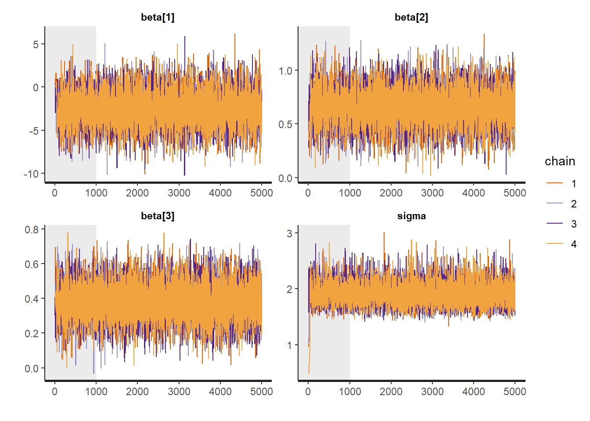
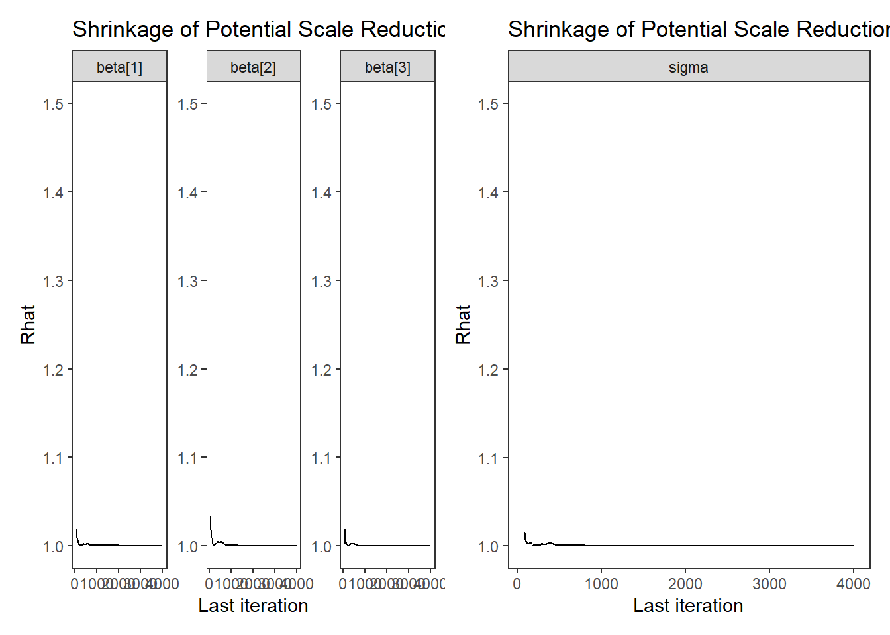

6.1 Stan Model for Regression Model
model_reg <- '
data {
int N;
real x1[N];
real x2[N];
real y[N];
}
parameters {
real beta[3];
real<lower=0> tau;
}
transformed parameters {
real<lower=0> sigma;
sigma = 1/sqrt(tau);
}
model {
for(i in 1:N){
y[i] ~ normal(beta[1] + beta[2]*x1[i] + beta[3]*x2[i], sigma);
}
beta ~ normal(0, 100);
tau ~ gamma(1, 1);
}
generated quantities {
real varerror;
real vary;
real Rsquared;
real error[N];
for(i in 1:N){
error[i] = y[i] - (beta[1] + beta[2]*x1[i] + beta[3]*x2[i]);
}
varerror = variance(error);
vary = variance(y);
Rsquared = 1 - (varerror/vary);
}
'
# data must be in a list
dat <- read.table("data/Chp4_Reg_Chapter_Tests.dat", header=T)
mydata <- list(
N=nrow(dat),
x1=dat$Ch1Test,
x2=dat$Ch2Test,
y =dat$Ch3Test
)
# start values
start_values <- function(){
list(sigma=1, beta=c(0,0,0))
}
# Next, need to fit the model
# I have explicited outlined some common parameters
fit <- stan(
model_code = model_reg, # model code to be compiled
data = mydata, # my data
init = start_values, # starting values
chains = 4, # number of Markov chains
warmup = 1000, # number of warm up iterations per chain
iter = 5000, # total number of iterations per chain
cores = 4, # number of cores (could use one per chain)
refresh = 0 # no progress shown
)## Warning in system(paste(CXX, ARGS), ignore.stdout = TRUE, ignore.stderr = TRUE): '-E' not
## found## Inference for Stan model: 66db47b16bda4d720cafb6a9769da243.
## 4 chains, each with iter=5000; warmup=1000; thin=1;
## post-warmup draws per chain=4000, total post-warmup draws=16000.
##
## mean se_mean sd 2.5% 25% 50% 75% 97.5% n_eff Rhat
## beta[1] -2.53 0.02 1.92 -6.31 -3.79 -2.51 -1.26 1.23 6902 1
## beta[2] 0.66 0.00 0.17 0.33 0.55 0.66 0.77 0.99 6171 1
## beta[3] 0.38 0.00 0.10 0.18 0.31 0.38 0.45 0.59 8164 1
## tau 0.28 0.00 0.06 0.18 0.24 0.28 0.32 0.41 8776 1
## sigma 1.91 0.00 0.20 1.57 1.77 1.89 2.03 2.36 8279 1
## varerror 3.66 0.00 0.16 3.51 3.54 3.61 3.71 4.09 4951 1
## vary 8.79 0.00 0.00 8.79 8.79 8.79 8.79 8.79 2 1
## Rsquared 0.58 0.00 0.02 0.53 0.58 0.59 0.60 0.60 4951 1
## error[1] -0.25 0.02 1.40 -2.97 -1.16 -0.26 0.66 2.52 7141 1
## error[2] 1.72 0.01 0.50 0.74 1.38 1.72 2.04 2.70 7445 1
## error[3] -1.05 0.01 0.56 -2.15 -1.43 -1.05 -0.67 0.05 6866 1
## error[4] -3.20 0.01 0.76 -4.70 -3.70 -3.20 -2.68 -1.72 6827 1
## error[5] -2.80 0.01 0.52 -3.82 -3.14 -2.80 -2.45 -1.76 9994 1
## error[6] 0.44 0.00 0.41 -0.37 0.17 0.44 0.72 1.26 9692 1
## error[7] -1.94 0.00 0.39 -2.71 -2.20 -1.94 -1.68 -1.16 9036 1
## error[8] -6.22 0.00 0.39 -6.98 -6.47 -6.22 -5.96 -5.45 11261 1
## error[9] 3.40 0.00 0.34 2.74 3.18 3.40 3.63 4.07 11991 1
## error[10] 4.02 0.00 0.31 3.41 3.81 4.02 4.23 4.63 11859 1
## error[11] -0.75 0.00 0.35 -1.44 -0.98 -0.74 -0.51 -0.05 9382 1
## error[12] 0.49 0.01 0.49 -0.47 0.16 0.49 0.82 1.44 8248 1
## error[13] 2.49 0.01 0.49 1.53 2.16 2.49 2.82 3.44 8248 1
## error[14] -0.73 0.01 0.70 -2.10 -1.19 -0.74 -0.26 0.67 8894 1
## error[15] 0.36 0.00 0.30 -0.22 0.16 0.36 0.56 0.95 13643 1
## error[16] 0.36 0.00 0.30 -0.22 0.16 0.36 0.56 0.95 13643 1
## error[17] 0.98 0.00 0.27 0.45 0.79 0.98 1.16 1.52 15655 1
## error[18] 1.98 0.00 0.27 1.45 1.79 1.98 2.16 2.52 15655 1
## error[19] -0.40 0.00 0.28 -0.95 -0.59 -0.40 -0.21 0.15 14629 1
## error[20] 1.60 0.00 0.28 1.05 1.41 1.60 1.79 2.15 14629 1
## error[21] 1.22 0.00 0.33 0.58 1.00 1.22 1.44 1.84 12204 1
## error[22] 2.22 0.00 0.33 1.58 2.00 2.22 2.44 2.84 12204 1
## error[23] 0.83 0.00 0.39 0.06 0.57 0.83 1.09 1.60 10573 1
## error[24] 0.83 0.00 0.39 0.06 0.57 0.83 1.09 1.60 10573 1
## error[25] 3.00 0.01 0.90 1.23 2.40 2.99 3.59 4.78 8173 1
## error[26] -1.38 0.01 0.80 -2.96 -1.92 -1.39 -0.86 0.21 8234 1
## error[27] -0.91 0.00 0.44 -1.78 -1.21 -0.91 -0.62 -0.03 9291 1
## error[28] 0.09 0.00 0.44 -0.78 -0.21 0.09 0.38 0.97 9291 1
## error[29] 2.09 0.00 0.44 1.22 1.79 2.09 2.38 2.97 9291 1
## error[30] -1.68 0.00 0.32 -2.31 -1.89 -1.68 -1.46 -1.05 11895 1
## error[31] -0.68 0.00 0.32 -1.31 -0.89 -0.68 -0.46 -0.05 11895 1
## error[32] -0.06 0.00 0.30 -0.64 -0.26 -0.06 0.14 0.52 13836 1
## error[33] 0.94 0.00 0.30 0.36 0.74 0.94 1.14 1.52 13836 1
## error[34] 1.94 0.00 0.30 1.36 1.74 1.94 2.14 2.52 13836 1
## error[35] -1.44 0.00 0.31 -2.05 -1.65 -1.44 -1.23 -0.84 14248 1
## error[36] -0.44 0.00 0.31 -1.05 -0.65 -0.44 -0.23 0.16 14248 1
## error[37] 1.56 0.00 0.31 0.95 1.35 1.56 1.77 2.16 14248 1
## error[38] 0.18 0.00 0.35 -0.52 -0.06 0.18 0.41 0.87 12929 1
## error[39] 1.18 0.00 0.35 0.48 0.94 1.18 1.41 1.87 12929 1
## error[40] -0.21 0.00 0.42 -1.03 -0.48 -0.21 0.08 0.61 11551 1
## error[41] -1.33 0.00 0.43 -2.18 -1.62 -1.33 -1.04 -0.48 8764 1
## error[42] 0.90 0.00 0.37 0.16 0.65 0.90 1.15 1.63 10648 1
## error[43] -3.48 0.00 0.38 -4.24 -3.74 -3.48 -3.22 -2.73 11458 1
## error[44] -2.48 0.00 0.38 -3.24 -2.74 -2.48 -2.22 -1.73 11458 1
## error[45] -1.86 0.00 0.42 -2.69 -2.14 -1.86 -1.58 -1.03 11576 1
## error[46] -0.86 0.00 0.42 -1.69 -1.14 -0.86 -0.58 -0.03 11576 1
## error[47] -0.86 0.00 0.42 -1.69 -1.14 -0.86 -0.58 -0.03 11576 1
## error[48] 0.14 0.00 0.42 -0.69 -0.14 0.14 0.42 0.97 11576 1
## error[49] 0.14 0.00 0.42 -0.69 -0.14 0.14 0.42 0.97 11576 1
## error[50] 0.14 0.00 0.42 -0.69 -0.14 0.14 0.42 0.97 11576 1
## lp__ -59.45 0.02 1.48 -63.21 -60.18 -59.11 -58.34 -57.62 5192 1
##
## Samples were drawn using NUTS(diag_e) at Fri Oct 02 12:01:32 2020.
## For each parameter, n_eff is a crude measure of effective sample size,
## and Rhat is the potential scale reduction factor on split chains (at
## convergence, Rhat=1).## 'pars' not specified. Showing first 10 parameters by default.## ci_level: 0.8 (80% intervals)## outer_level: 0.95 (95% intervals)
# Gelman-Rubin-Brooks Convergence Criterion
p1 <- ggs_grb(ggs(fit, family = "beta")) +
theme_bw() + theme(panel.grid = element_blank())
p2 <- ggs_grb(ggs(fit, family = "sigma")) +
theme_bw() + theme(panel.grid = element_blank())
p1 + p2
# autocorrelation
p1 <- ggs_autocorrelation(ggs(fit, family="beta")) +
theme_bw() + theme(panel.grid = element_blank())
p2 <- ggs_autocorrelation(ggs(fit, family="sigma")) +
theme_bw() + theme(panel.grid = element_blank())
p1 + p2# plot the posterior density
plot.data <- as.matrix(fit)
plot_title <- ggtitle("Posterior distributions",
"with medians and 80% intervals")
mcmc_areas(
plot.data,
pars = c("beta[1]", "beta[2]", "beta[3]", "sigma"),
prob = 0.8) +
plot_title
# I prefer a posterior plot that includes prior and MLE
# Expanded Posterior Plot
fit.lm <- summary(lm(Ch3Test ~ 1 + Ch1Test + Ch2Test, data=dat))
MLE <- c(fit.lm$coefficients[,1], fit.lm$sigma**2, fit.lm$r.squared)
prior_beta <- function(x){dnorm(x, 0, 1000)}
x.beta <- seq(-10, 4.99, 0.01)
prior.beta <- data.frame(beta=x.beta, dens.beta = prior_beta(x.beta))
prior_sig <- function(x){dgamma(x, 1, 1)}
x.sig <- seq(0.01, 2.5, 0.01)
prior.sig <- data.frame(sig=x.sig, dens.sig = prior_sig(x.sig))
cols <- c("Posterior"="#0072B2", "Prior"="#E69F00", "MLE"= "black")#"#56B4E9", "#E69F00" "#CC79A7"
plot.data <- as.data.frame(plot.data)
p1 <- ggplot()+
geom_density(data=plot.data,
aes(x=`beta[1]`, color="Posterior"))+
geom_line(data=prior.beta,
aes(x=beta, y=dens.beta, color="Prior"))+
geom_vline(aes(xintercept=MLE[1], color="MLE"))+
scale_color_manual(values=cols, name=NULL)+
theme_bw()+
theme(panel.grid = element_blank())
p2 <- ggplot()+
geom_density(data=plot.data,
aes(x=`beta[2]`, color="Posterior"))+
geom_line(data=prior.beta,
aes(x=beta, y=dens.beta, color="Prior"))+
geom_vline(aes(xintercept=MLE[2], color="MLE"))+
scale_color_manual(values=cols, name=NULL)+
lims(x=c(0, 1))+
theme_bw()+
theme(panel.grid = element_blank())
p3 <- ggplot()+
geom_density(data=plot.data,
aes(x=`beta[3]`, color="Posterior"))+
geom_line(data=prior.beta,
aes(x=beta, y=dens.beta, color="Prior"))+
geom_vline(aes(xintercept=MLE[3], color="MLE"))+
scale_color_manual(values=cols, name=NULL)+
lims(x=c(0, 1))+
theme_bw()+
theme(panel.grid = element_blank())
p4 <- ggplot()+
geom_density(data=plot.data,
aes(x=sigma, color="Posterior"))+
geom_line(data=prior.sig,
aes(x=sig, y=dens.sig, color="Prior"))+
geom_vline(aes(xintercept=MLE[4], color="MLE"))+
scale_color_manual(values=cols, name=NULL)+
theme_bw()+
theme(panel.grid = element_blank())
p5 <- ggplot()+
geom_density(data=plot.data,
aes(x=Rsquared, color="Posterior"))+
geom_vline(aes(xintercept=MLE[5], color="MLE"))+
scale_color_manual(values=cols, name=NULL)+
lims(x=c(0, 1))+
theme_bw()+
theme(panel.grid = element_blank())
p1 + p2 + p3 + p4 + p5 + plot_layout(guides="collect")## Warning: Removed 328 rows containing non-finite values (stat_density).## Warning: Removed 1399 row(s) containing missing values (geom_path).## Warning: Removed 1 rows containing non-finite values (stat_density).## Warning: Removed 1399 row(s) containing missing values (geom_path).